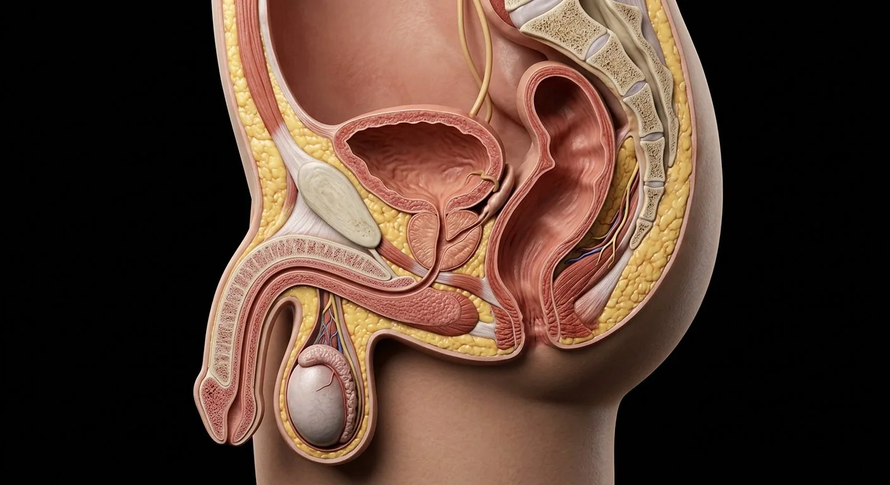

How this part of the body works
Deep regional anatomy — the pouches, sphincters and nerves examined in every pelvic module.
Read the anatomy, part by part
These 10 structures describe anatomy related to the chapter’s regional illustration. Each entry separates location, function and a clinical point.
Urinary bladder
Reservoir behind the pubis.
What it doesStores urine; trigone is its smooth base.
Clinical connectionOutlet obstruction in men is usually prostatic.
Prostate gland
Walnut gland around the prostatic urethra.
What it doesSeminal fluid (PSA, citric acid, fibrinolysin).
Clinical connectionBPH compresses the urethra — hesitancy and nocturia.
Prostatic & membranous urethra
Urethra traversing prostate and perineum.
What it doesConduit for urine and semen; sphincters here.
Clinical connectionCatheterisation respects the puboprostatic curve.
Ejaculatory ducts
Vas + seminal vesicle ducts through prostate.
What it doesDeliver sperm into prostatic urethra.
Clinical connectionObstruction → low-volume ejaculate.
Rectum
Terminal 12–15 cm with three valves.
What it doesStores stool before defecation.
Clinical connectionRectal exam reaches prostate anteriorly, rectum all round.
Anal canal & sphincters
Internal (smooth) + external (striated) sphincters.
What it doesContinence control.
Clinical connectionFissures tear posteriorly where blood supply is poorest.
Levator ani (pelvic floor)
Puborectalis, pubococcygeus, iliococcygeus sheet.
What it doesSupports viscera; maintains anorectal angle.
Clinical connectionPelvic floor training helps post-prostatectomy incontinence.
Ischio-anal fossa
Fat-filled wedge beside the anal canal.
What it doesCushions canal expansion; infection space.
Clinical connectionInfection may spread through this space; suspected abscess needs clinical assessment.
Pudendal nerve & internal pudendal vessels
S2–S4 route via Alcock's canal.
What it doesSomatic control of sphincters and penile sensation.
Clinical connectionPudendal block for episiotomy/haemorrhoid surgery.
Perineal body
Fibromuscular node between anus and bulb.
What it doesAnchor for nine perineal muscles.
Clinical connectionPerineal trauma can compromise the central support node.
Deeper structures and tissue layers
These 10 additional entries give anatomical context. They are deliberately not assigned a photographic pin on the regional image.
Related deep chapters: Penile erectile tissue, Prostate, ducts & penis.
Paired corpora cavernosa
Two dorsal longitudinal erectile cylinders that unite in shaft and separate proximally as crura.
What it doesPrimary rigid erectile compartment.
Clinical connectionFibrous tunica helps compress emissary venous outflow.
Bladder neck / internal sphincter
Smooth-muscle outlet superior to prostate.
What it doesCloses during emission to limit retrograde ejaculation.
Clinical connectionBladder-neck dysfunction may affect voiding.
Corpus spongiosum
Single ventral erectile column surrounding spongy urethra.
What it doesEngorges without compressing urethral lumen closed.
Clinical connectionIts distal expansion is the glans penis.
Prostatic transition zone
Zone surrounding proximal prostatic urethra.
What it doesContains glandular ducts and fibromuscular tissue.
Clinical connectionCommon origin of benign prostatic enlargement.
Tunica albuginea
Strong fibrous sheath encasing cavernosa, with distinct collagen layers.
What it doesResists expansion and aids venous occlusion.
Clinical connectionDisruption during trauma can constitute penile fracture.
Prostatic peripheral zone
Posterior-lateral zone palpable through rectum.
What it doesProduces prostatic secretions.
Clinical connectionMost prostatic cancers arise in this zone.
Cavernosal trabeculae
Smooth-muscle and connective-tissue struts bordering interconnected blood sinusoids.
What it doesRelaxation permits filling of cavernous lacunae.
Clinical connectionVascular dysfunction can impair rigidity.
Prostatic central zone
Tissue surrounding ejaculatory ducts.
What it doesSecretory prostatic gland region.
Clinical connectionLess frequently a primary site of carcinoma.
Deep penile arteries
Internal pudendal branches traveling within each corpus cavernosum.
What it doesFeed cavernosal tissue.
Clinical connectionNot the same as superficial dorsal arteries.
Prostatic urethra
Urethra through prostate from bladder neck to membrane.
What it doesConducts urine and semen in separate phases.
Clinical connectionEnlarged transition zone may narrow it.
Five questions about Male pelvis & perineum
Short answers grounded in the structures described above. Use the illustrated guide for anatomical context.
Which organs are located in the male pelvis?
The male pelvis contains bladder, prostate and rectum, along with parts of the urethra, reproductive ducts, pelvic vessels and nerves.
What is the pelvic floor's role in men?
Pelvic-floor muscles support pelvic organs and contribute to continence. Their relationship to the urethra and perineal structures is important in regional anatomy.
Where is the urinary bladder in the male pelvis?
Reservoir behind the pubis. Function: Stores urine; trigone is its smooth base.
Where is the prostatic & membranous urethra located?
Urethra traversing prostate and perineum. Function: Conduit for urine and semen; sphincters here.
What is the function of the rectum?
Function: Stores stool before defecation. Terminal 12–15 cm with three valves.
Related anatomy guides
Follow these connected structures and body systems in the illustrated atlas.
 Prostate, ducts & penisProstatic zones and the urinary–ejaculatory crossing: urethra, verumontanum, ducts, seminal vesicles and erectile bodies.↗
Prostate, ducts & penisProstatic zones and the urinary–ejaculatory crossing: urethra, verumontanum, ducts, seminal vesicles and erectile bodies.↗ Testis & epididymis — microanatomyThe sperm-production organ from tunica through seminiferous tubule to rete, efferent ducts and epididymal tail.↗
Testis & epididymis — microanatomyThe sperm-production organ from tunica through seminiferous tubule to rete, efferent ducts and epididymal tail.↗ Male reproductive systemSperm production in the scrotum, maturation in the epididymis, and a shared exit with urine.↗
Male reproductive systemSperm production in the scrotum, maturation in the epididymis, and a shared exit with urine.↗ Urinary bladderA detrusor-muscle reservoir with a smooth trigone and a two-stage sphincter.↗
Urinary bladderA detrusor-muscle reservoir with a smooth trigone and a two-stage sphincter.↗Further reading
General anatomy references and related source chapters for continued study. These links do not make the digital illustrations clinical images or certify every anatomical variant.
This educational page is not medical advice and has not undergone formal clinical peer review. Spotted an error? Contact the editor.
Open the realistic interactive plate, label lines, focus view and self-test.